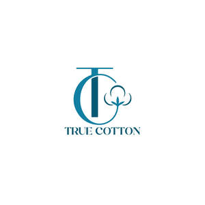

Trade Mark Journal No.2025/017 25 April 2025
UK00004160834 15 February 2025 (22,23,24,30)

Registration of this mark shall not give the right to the exclusive use of the word ‘COTTON'.
- Class 22
- Cotton linter; Cotton fibers; Cotton fibres; Cotton netting; Raw cotton; Cotton (Raw -); Cotton batting for futon; Cotton tow; Cotton bags [for use in industry]; Cotton waddings for clothes; Fleece wool; Cotton bags for industrial purposes; Combed wool; Silk fibers; Floss silk; Waste [flock] (Cotton -) for padding and stuffing; Cotton waste [flock] for padding and stuffing; Wood wool; Wool (Wood -); Shorn wool; Wool (Shorn -); Carded wool; Wool (Carded -); Raw wool; Wool flock; Flock (Wool -); Wool (Upholstery -) [stuffing]; Upholstery wool [stuffing]; Treated wool; Scoured wool.
- Class 23
- Cotton yarn; Spun cotton; Cotton for darning; Cotton thread; Waste cotton yarn; Yarns made of cotton; Cotton thread and yarn; Cotton threads and yarns; Twisted cotton thread and yarn; Cotton base mixed thread and yarn; Silk yarn; Threads made of spun cotton; Linen yarn; Carded yarns in wool for textile use; Wool yarn; Rayon yarn; Raw silk yarn; Carded yarns of hemp for textile use; Cashmere yarns; Carded threads in wool for textile use; Angora yarn; Twisted wool thread and yarn; Woollen thread and yarn; Wool base mixed thread and yarn; Yarns made of angora for textile use; Woolen thread and yarn; Chenille yarn; Eiderdown yarn; Spun silk yarn; Hemp yarn; Textile yarns; Yarns made of silk; Carded yarns in natural fibres for textile use; Textile yarns made of natural fibres; Jute yarn.
- Class 24
- Cotton fabric; Cotton fabrics; Cotton cloths; Cotton blankets; Cotton knitted fabric; Waste cotton fabrics; Textiles made of cotton; Knitted fabrics of cotton yarn; Fabrics made from cotton, other than for insulation; Cotton base mixed fabrics; Textile piece goods made of cotton; Japanese cotton towels (tenugui); Woolen fabric; Woollen fabric; Silk cloth; Silk [cloth]; Viscose textiles; Linen [fabric]; Hemp fabric; Wool yarn fabrics; Spun silk fabrics; Hemp yarn fabrics; Knitted fabrics of silk yarn; Jute fabric; Silk blankets; Denim [cloth]; Woollen fabrics; Jute fabrics; Knitted fabrics of wool yarn; Textile fabric; Woolen cloth; Towelling [textile]; Hemp cloth; Denim fabric; Linen cloth; Rubberized textile fabrics; Textiles made of flannel; Textiles made of wool; Jute cloth; Wool loop knit fabrics; Fabrics made from wool, other than for insulation; Woollen blankets; Woolen blankets; Woollen fabrics for use in the manufacture of coats; Fabrics woven from ceramic fibres, other than for insulation; Cloth; Woollen cloth; Cloth bunting; Woven linen fabrics; Woven silk fabrics; Woven cloth with breathable polyurethane coating for water proof garments; Sponge cloths [textile piece goods]; Markers [labels] of cloth for textile fabrics; Silk fabrics; Cloths of woven textile material for washing the body [other than for medical use]; Bed linen made of non-woven textile material; Embroidery (Traced cloth for -); Traced cloth for embroidery; Trellis [cloth]; Cloth pennants; Muslin fabric; Rubberized cloths; Cloth coasters; Textile napkins [table linen]; Billiard cloth.
- Class 30
- Rice; Rice noodles; Rice vermicelli; Rice porridge; Glutinous rice; Rice pasta; Flour of rice; Rice flour; Rice dumplings; Rice pudding; Stir-fried rice; Rice flour porridge; Cooked rice; Fried rice; Glutinous rice flour; Brown rice; Steamed rice; Rice salad; Husked rice; Rice puddings; Rice cakes; Cakes (Rice -); Wholemeal rice; Rice biscuits; Rice crackers; Sauces for rice; Rice starch flour; Creamed rice; Rice crisps; Rice snacks; Puffed rice; Rice sticks; Chinese rice noodles (bifun, uncooked); Enriched rice; Rice mixes; Prepared rice; Rice mixed with vegetables and beef [bibimbap]; Bibimbap [rice mixed with vegetables and beef]; Edible rice paper; Senbei (rice crackers); Rice crackers [senbei]; Pounded rice cakes (mochi); Kheer mix (rice pudding); Foodstuffs made of rice; Prepared rice dishes; Pellet-shaped rice crackers (arare); Glutinous pounded rice cake coated with bean powder (injeolmi); Natural rice flakes; Glutinous rice wrapped in bamboo leaves (Zongzi); Cakes of sugar-bounded millet or popped rice (okoshi); Fermenting malted rice (Koji); Stir fried rice cake [topokki]; Rice dumplings dressed with sweet bean jam (ankoro); Frozen prepared rice with seasonings and vegetables.
SAWIE LTD